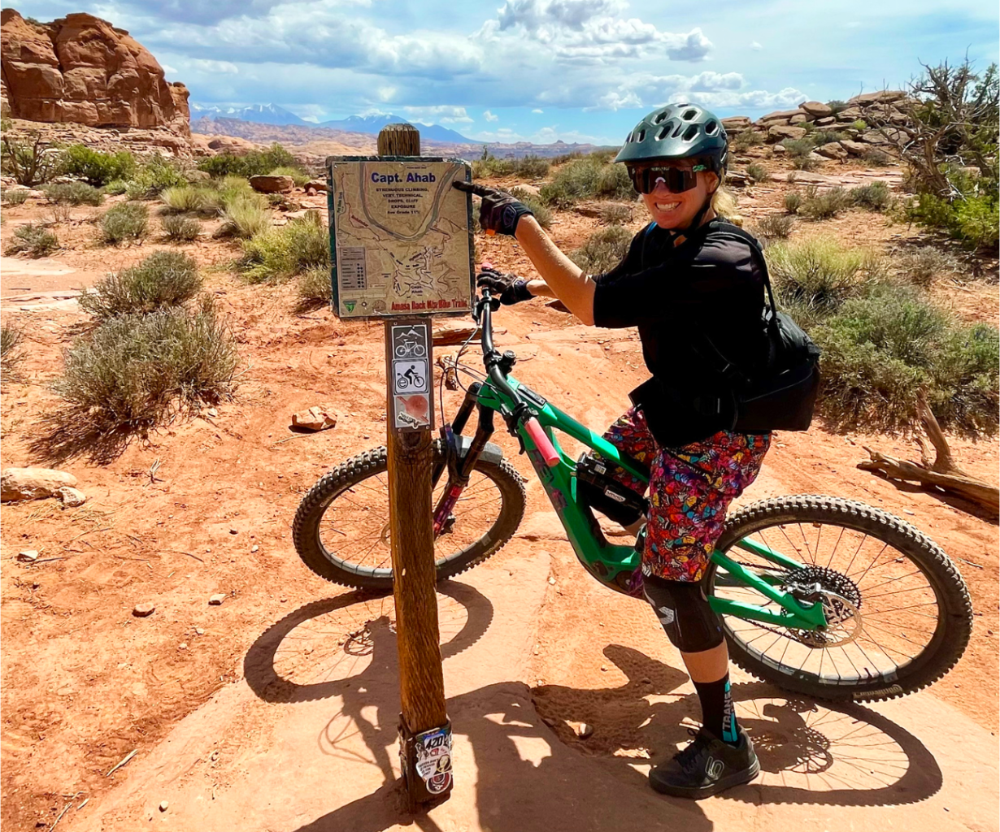
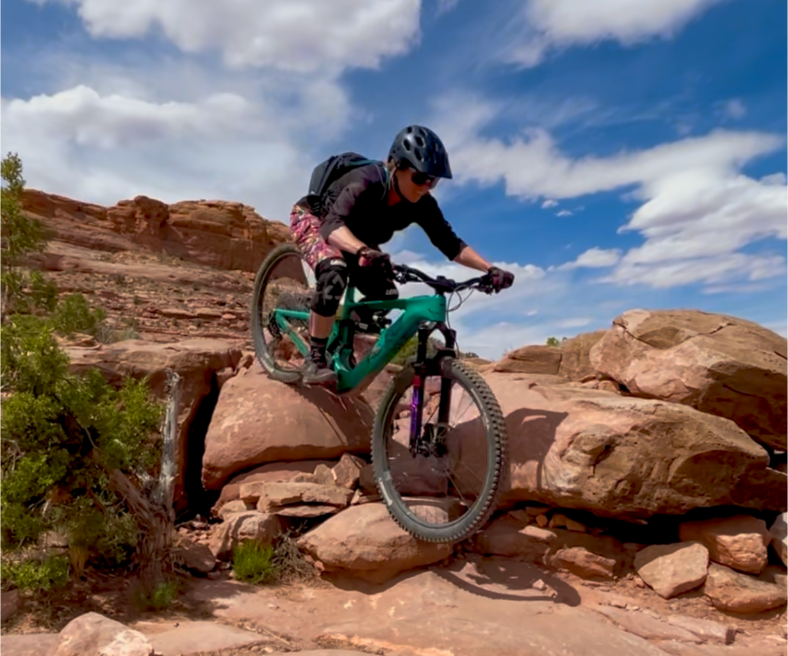
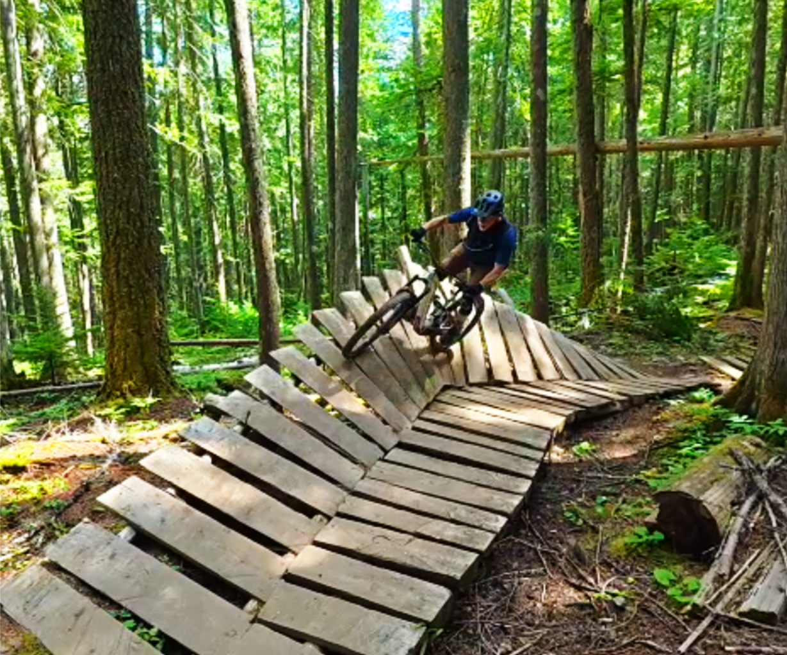
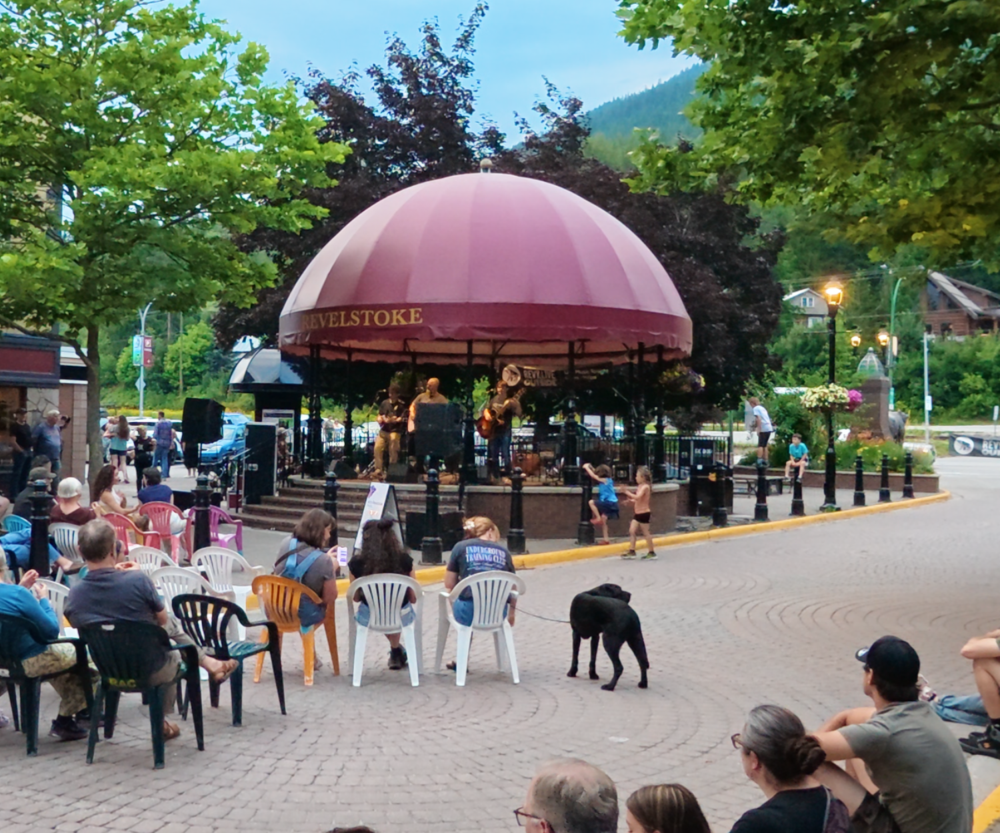

Identify the riding areas
Name the systems so riders know where to go and what each area offers.
Turn “I've heard of your destination”
into “We need to ride there.”
Ride Ready · Mountain bike destination media
Ride Ready is the complete marketing package that shows riders what they need to see to choose your destination.
Information moves riders to action

Name the systems so riders know where to go and what each area offers.

Put real trail names and difficulty ratings on screen as riders see the terrain for themselves.

Cover multiple trails and systems so riders understand how much there is to ride.

Show what happens after the ride and give visitors more reasons to stay longer, explore the town and support local businesses.
Core film
A 2-, 4-, or 6-minute Ride Ready film shows named trails, difficulty ratings, riding areas, terrain, and the town experience.
Give them a reason to choose you.Social promotion
Short 15- and 30-second promotional clips stop the scroll and send interested riders to your website.
Turn interest into website visits.Search + AI
A firsthand destination guide answers the questions riders ask while planning and provides useful website content structured for search and AI discovery.
Move riders closer to booking.AI + Search-ready destination guide
After riding and filming your destination, we write a complete guide for your website. It gives riders the information they need to choose your trails and plan the whole trip.
Clear descriptions and direct answers give search engines and AI search tools useful information about your destination.
We write it. Your team publishes it.
Finished article copy and publishing instructions, ready for your website.
Excerpt from our Revelstoke guide
This was tied with Flowdown for my favorite trails in Revelstoke when it came to tech. Multiple wooden bridges, a big rock roll and a wall ride!
Frisby Ridge is a full-day adventure. Bring extra water, snacks, gear for changing weather and bike tools.
From the destination guide by Lee & Kelly · Trail Quest Productions
Experienced, relatable riders give viewers an honest sense of the terrain, difficulty, and overall experience.
We understand both sides of the decision: what riders need to see and what destinations need to communicate.
Living, leading, and teaching in the outdoors
Direct experience working with bike park managers
Kelly manages the Mountain Biking Ladies community
Traveling full-time and experiencing destinations as visitors
Give riders the information and inspiration they need to choose your destination.